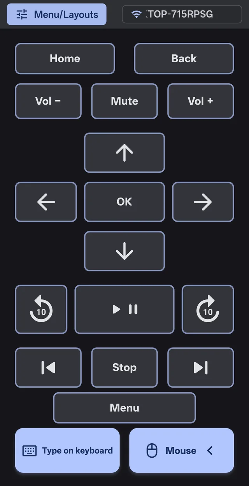

هاتفك هو ذراع التحكم.
ذراع ألعاب، ولوحة مفاتيح وماوس، وريموت للتلفزيون، وريموت للشرائح لجهاز الكمبيوتر أو Mac أو التلفزيون أو الجهاز اللوحي.
مجاني. عبر البلوتوث لا حاجة لتثبيت أي شيء على الجهاز الآخر.

اتصل بالطريقة التي تناسبك
بلوتوث
لا شيء للتثبيتاقرن مرة واحدة من إعدادات البلوتوث في الكمبيوتر أو Mac أو التلفزيون أو الجهاز اللوحي. سيظهر كذراع ألعاب ولوحة مفاتيح وماوس حقيقية.
دليل إعداد البلوتوثWi‑Fi مع Companion
Windows، اختياريأقل تأخير، ويعثر على جهازك تلقائيًا، ويتيح اللعب لما يصل إلى 16 هاتفًا معًا.
هل يظهر تحذير من المتصفح أو SmartScreen؟
Companion برنامج جديد، لذلك لا يعرفه Windows ولا متصفحك بعد. هذا أمر طبيعي مع البرامج الجديدة.
- إذا قال المتصفح إن الملف لا يُنزَّل كثيرًا: افتح التنزيلات (Ctrl + J)، وافتح قائمة الملف واختر "الاحتفاظ"، ثم "الاحتفاظ على أي حال" إذا طُلب منك.
- "قام Windows بحماية الكمبيوتر": انقر على "مزيد من المعلومات"، ثم "تشغيل على أي حال".
- وافق على طلب التحكم في حساب المستخدم حتى يتمكن برنامج الإعداد من إضافة برنامج تشغيل ViGEmBus.
يضيف برنامج الإعداد برنامج التشغيل مفتوح المصدر ViGEmBus فقط إذا لم يكن موجودًا، حتى تتعرف الألعاب على هاتفك كذراع تحكم Xbox. ولاستخدام Wi‑Fi، اسمح لـ Companion على الشبكات الخاصة في جدار حماية Windows.
ذراع تحكم حقيقية في هاتفك
عصا تحكم، وأزرار زناد، وأزرار كتف، وأزرار اتجاهات. تراها الألعاب كذراع تحكم حقيقية، فتعمل مباشرةً.


- عصا تحكم عائمةتظهر أينما وضعت إبهامك.
- ضغط العصاانقر مرتين على العصا لضغطها.
- اللعب الجماعيحتى 16 هاتفًا على كمبيوتر Windows واحد، وكل هاتف ذراع تحكم مستقلة.
أكثر من مجرد ذراع ألعاب
بدّل التخطيطات من القائمة. التطبيق نفسه، والاتصال نفسه.
-

الماوسلوحة لمس ونقر وتمرير واختصارات. -

لوحة المفاتيحكل المفاتيح، بما فيها مفاتيح F والاختصارات. -

ريموت التلفزيونالصوت والتشغيل والأسهم لأي تطبيق تلفزيون. -

ريموت الشرائحPowerPoint أو عروض Google التقديمية أو Canva.
وأيضًا في التطبيق

- تنزيل مجانيعلى Google Play.
- بلا حسابافتحه والعب.
- يبقى على شبكتكتنتقل أوامرك مباشرةً من هاتفك إلى جهازك.

أمسك هاتفك. واضغط تشغيل.
مجاني لنظام Android. وCompanion لنظام Windows اختياري.